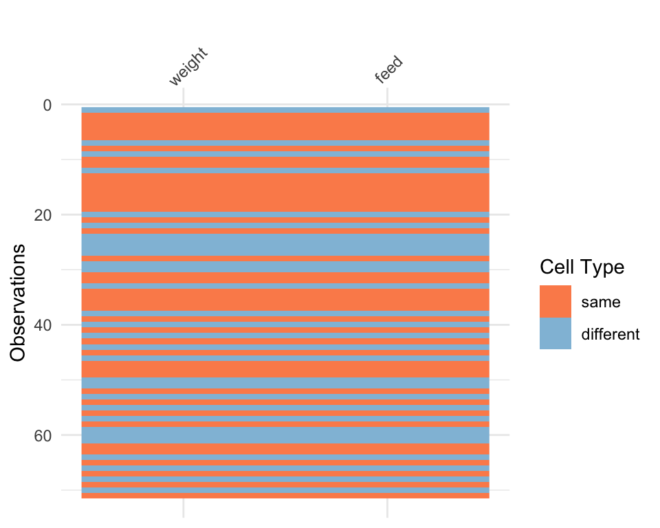
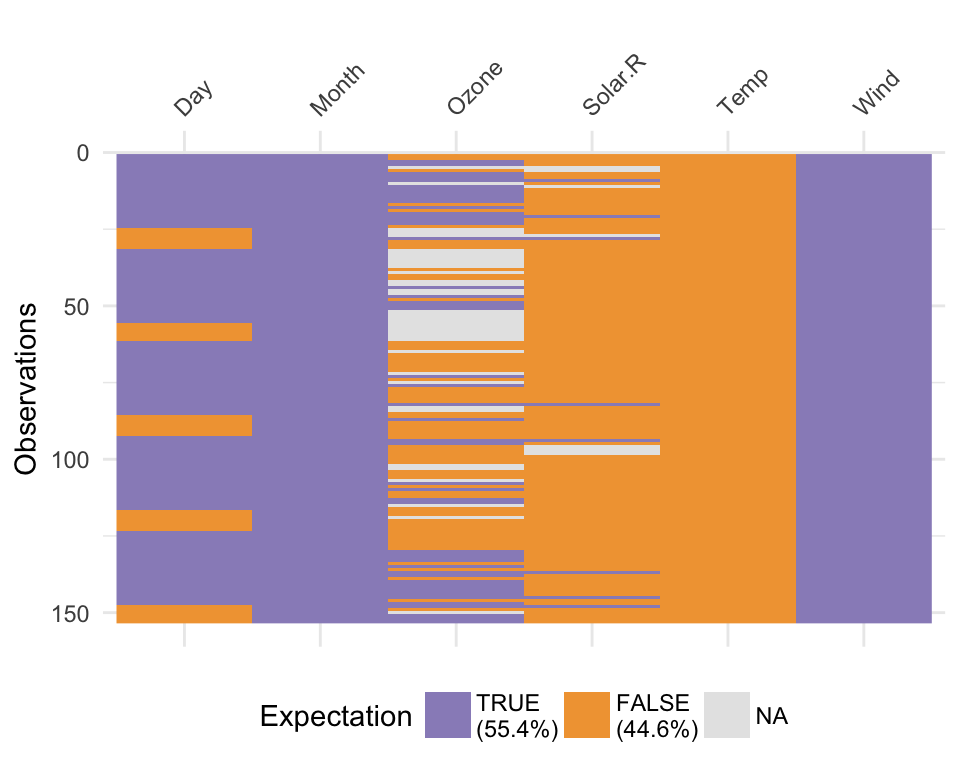
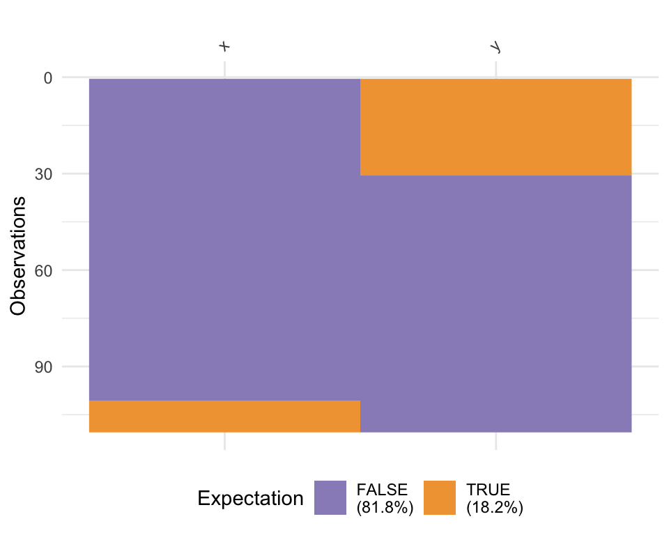
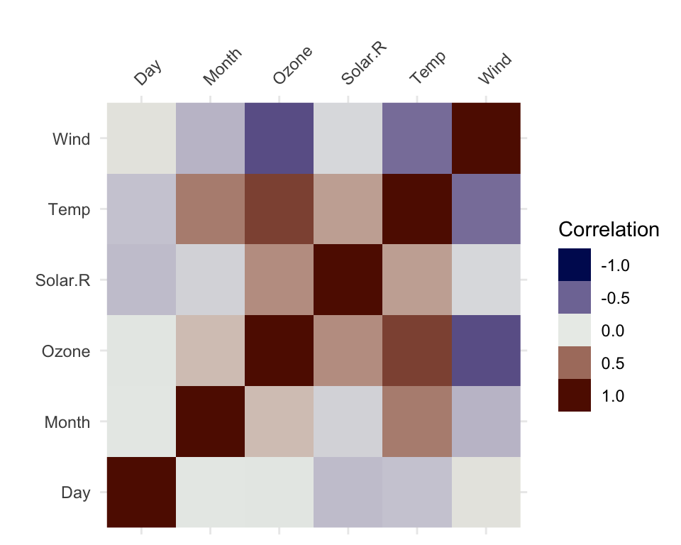
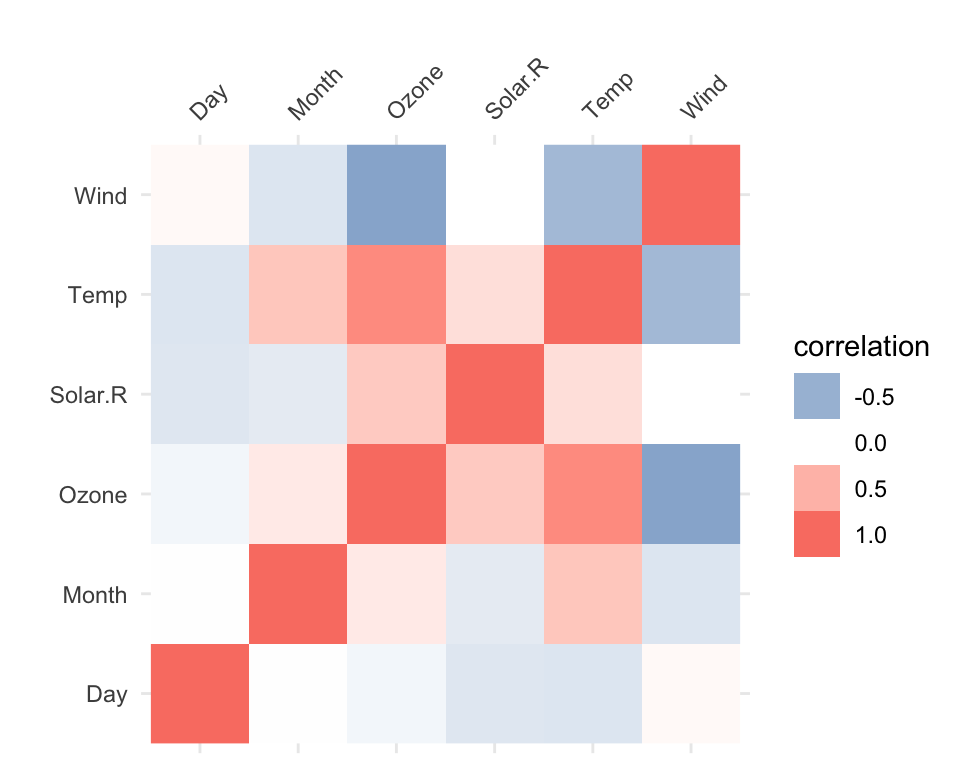
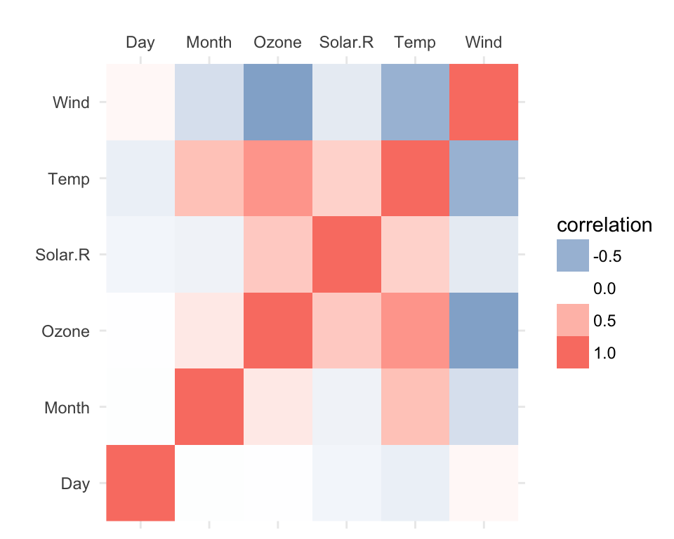
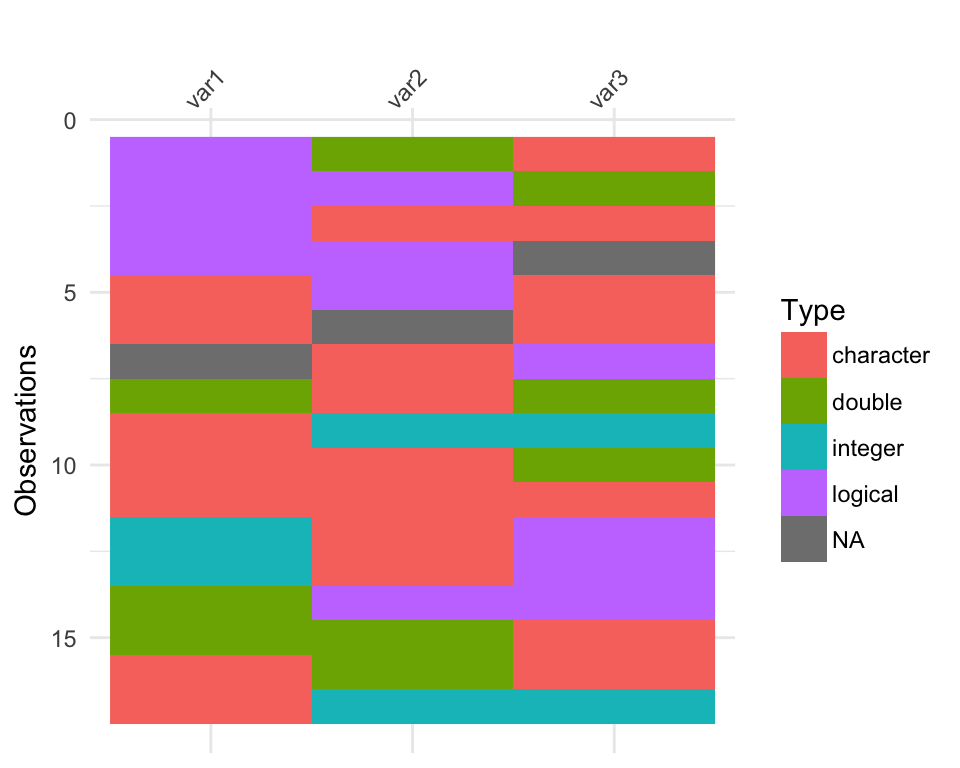
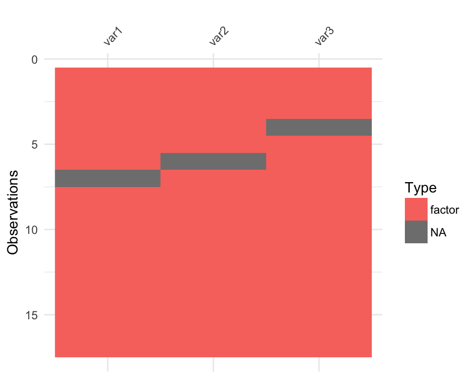

When you get a new data set, you need to look at the data to get a sense of what it contains and potential problems with it. That’s a key phrase here “looking at the data” - what does that mean?
On the one hand, you can look at the head of the data:
## Sepal.Length Sepal.Width Petal.Length Petal.Width Species
## 1 5.1 3.5 1.4 0.2 setosa
## 2 4.9 3.0 1.4 0.2 setosa
## 3 4.7 3.2 1.3 0.2 setosa
## 4 4.6 3.1 1.5 0.2 setosa
## 5 5.0 3.6 1.4 0.2 setosa
## 6 5.4 3.9 1.7 0.4 setosaOr you can have a glimpse at it through dplyr::glimpse
##
## Attaching package: 'dplyr'## The following objects are masked from 'package:stats':
##
## filter, lag## The following objects are masked from 'package:base':
##
## intersect, setdiff, setequal, union## Observations: 150
## Variables: 5
## $ Sepal.Length <dbl> 5.1, 4.9, 4.7, 4.6, 5.0, 5.4, 4.6, 5.0, 4.4, 4.9,...
## $ Sepal.Width <dbl> 3.5, 3.0, 3.2, 3.1, 3.6, 3.9, 3.4, 3.4, 2.9, 3.1,...
## $ Petal.Length <dbl> 1.4, 1.4, 1.3, 1.5, 1.4, 1.7, 1.4, 1.5, 1.4, 1.5,...
## $ Petal.Width <dbl> 0.2, 0.2, 0.2, 0.2, 0.2, 0.4, 0.3, 0.2, 0.2, 0.1,...
## $ Species <fct> setosa, setosa, setosa, setosa, setosa, setosa, s...Here we see that we have doubles, and a factor. We get some insight into the data.
But we don’t always have data like the canonical iris dataset. let’s take a look at some data that might be a bit more typical of “messy” data using the typical_data dataset from the visdat package.
## Observations: 5,000
## Variables: 9
## $ ID <chr> "0001", "0002", "0003", "0004", "0005", "0006", "...
## $ Race <fct> Black, Black, Black, Hispanic, NA, White, White, ...
## $ Age <chr> NA, "25", "31", "27", "21", "22", "23", "21", NA,...
## $ Sex <fct> Male, Male, Female, Female, Female, Female, Femal...
## $ `Height(cm)` <dbl> 175.9, 171.7, 173.5, 172.4, 158.5, 169.5, 163.7, ...
## $ IQ <dbl> 110, 84, 115, 84, 116, 83, 101, 97, 92, 99, 88, 8...
## $ Smokes <lgl> FALSE, TRUE, FALSE, FALSE, FALSE, FALSE, FALSE, F...
## $ Income <fct> 4334.29, 16682.37, 50402.01, 91442.86, 75266.05, ...
## $ Died <lgl> FALSE, TRUE, FALSE, FALSE, FALSE, FALSE, FALSE, F...Looking at this, you might then ask:
Isn’t it odd that Income is a factor? And Age is a character?
And you might start to wonder what else is different, what else changed?
And it might be a bit unclear where to go from there. Do you plot the data? Why does my plot look weird? What are these other strange features in the data? The visdat package provides visualisations of an entire dataframe at once. Initially inspired by csv-fingerprint, visdat provides tools to create heatmap-like visualisations of an entire dataframe. visdat provides 2 main functions: vis_dat and vis_miss.
vis_dat() helps explore the data class structure and missingness:

And the vis_miss function provides a custom plot for missing data.

The name visdat was chosen as it borrows from the idea of testdat, which provides unit testing for your data. In a similar way, visdat provides visual tests, the idea being that first you visualise your data (visdat), then you run tests from testdat, or a package like assertr, to fix these errors.
vis_dat
Let’s see what’s inside the dataset airquality, which contains information about daily air quality measurements in New York from May to September 1973. More information about the dataset can be found with ?airquality.
 The plot above tells us that R reads this dataset as having numeric and integer values, with some missing data in
The plot above tells us that R reads this dataset as having numeric and integer values, with some missing data in Ozone and Solar.R. The classes are represented on the legend, and missing data represented by grey. The column/variable names are listed on the x axis.
By default, vis_dat sorts the columns according to the type of the data in the vectors. You can turn this off by setting sort_type = FALSE. This feature is better illustrated using the typical_data dataset, created using wakefield and contained within visdat.


vis_miss
We can explore the missing data further using vis_miss.

Notice that the percentages of missingness are provided in the data. These are accurate to 1 decimal place. vis_miss indicates when there is a very small amount of missing data at <0.1% missingness.
df_test <- data.frame(x1 = 1:10000,
x2 = rep("A", 10000),
x3 = c(rep(1L, 9999), NA))
vis_miss(df_test)
vis_miss will also indicate when there is no missing data at all.
df_test <- data.frame(x1 = 1:10000,
x2 = rep("tidy", 10000),
x3 = rep("data", 10000))
vis_miss(df_test)
Columns can be arranged by columns with most missingness, by setting sort_miss = TRUE.

And missingness can be clustered by setting cluster = TRUE

To further explore the missingness structure in a dataset, I recommend the naniar package, which provides more general tools for graphical and numerical exploration of missing values.
vis_compare
Sometimes you want to see what has changed in your data. vis_compare() displays the differences in two dataframes of the same size. Let’s look at an example.
Let’s make some changes to the chickwts, and compare this new dataset.
chickwts_diff <- chickwts
chickwts_diff[sample(1:nrow(chickwts), 30),sample(1:ncol(chickwts), 2)] <- NA
vis_compare(chickwts_diff, chickwts)
Here the differences are marked in blue.
If you try and compare differences when the dimensions are different, you get an ugly error.
vis_expect
vis_expect visualises certain conditions or values in your data. For example, If you are not sure whether to expect values greater than 25 in your data (airquality), you could write: vis_expect(airquality, ~.x >= 25), and you can see if there are times where the values in your data are greater than or equal to 25.

This shows the proportion of times that there are values greater than 25, as well as the missings.
You could also, for example, explore a set of bad strings, or possible NA values and visualise where they are using vis_expect(data, ~.x %in% bad_strings) where bad_strings is a character vector containing bad strings like N A, N/A etc.
bad_data <- data.frame(x = c(rnorm(100), rep("N/A", 10)),
y = c(rep("N A ", 30), rnorm(80)))
vis_expect(bad_data, ~.x %in% c("N/A", "N A "))
vis_cor
To make it easy to plot correlations of your data, use vis_cor:

Under the hood, vis_cor is powered by the cor function in base R, and takes a character string indicating which correlation coefficient (or covariance) is to be computed. One of “pearson” (default), “kendall”, or “spearman”.

You can also specify what to do for the missing data using the na_action function, which again borrows from the cor methods. This can be “everything”, “all.obs”, “complete.obs”, “na.or.complete”, or “pairwise.complete.obs” (default), e.g.:

vis_guess
vis_guess() takes a guess at what each cell is. It’s best illustrated using some messy data, which we’ll make here.
messy_vector <- c(TRUE,
T,
"TRUE",
"T",
"01/01/01",
"01/01/2001",
NA,
NaN,
"NA",
"Na",
"na",
"10",
10,
"10.1",
10.1,
"abc",
"$%TG")
set.seed(1114)
messy_df <- data.frame(var1 = messy_vector,
var2 = sample(messy_vector),
var3 = sample(messy_vector))
So here we see that there are many different kinds of data in your dataframe. As an analyst this might be a depressing finding. We can see this comparison above.
Here, you might just assume your data is weird because it’s all factors - or worse, not notice that this is a problem.
At the moment vis_guess is very slow. Please take this into consideration when you are using it on data with more than 1000 rows. We’re looking into ways of making it faster, potentially using methods from the parallel package, or extending the c++ code from readr:::collectorGuess.
Interactivity
You can make the plots in visdat by wrapping them in plotly::ggplotly:
library(plotly)
ggplotly(vis_dat(airquality))
ggplotly(vis_miss(airquality))
ggplotly(vis_guess(airquality))In the future these will have their own functions, written in plotly with nice standardised on-hover behaviour. If you would like to see how these work, please see the development version on GitHub.